Soaring with FSX >>
Aircraft/Gauges >> ASH25
FSX Schleicher ASH25 Open-Class Sailplane

DOWNLOADS (two panel variants)
|
|
 |
'CAISET' panel
We produced two panel variants - 'B21' panel and 'CAISET' panel. This web page describes the common
instruments between the two, and the 'B21' computer vario set. Wolfgang has produced a complimentary web page
that has a download link for the CAISET version and also an FS9 version.
Wolfgang's
page including the 'CAISET' version here
Also we have some CAISET install instructions.
|
|
Credits
Wolfgang Piper (modelling, flight performance),
Ian Forster-Lewis (gauges, programming, flight performance),
Max Roodveldt (CAISET gauges)
It's worth mentioning that this project was very much an extended iterative collaborative effort between Wolfgang and myself (Ian). He had
all the good ideas and I made all the mistakes.
Overview
The ASH25 is a tandem two-seater high performance glider based on the world-championship winning single-seat ASW22.
In the 26m wingspan winglet version modelled here, it has the highest glider performance available today with a
maximum glide ratio of 60:1.
The ASH25 is designed for high performance. It has very high-aspect-ratio wings with six flap
positions - negative for high-speed and cruise, zero for achieving the maximum glide, positive for thermalling, and
a 'landing flap' setting to make landing this open-class racing aircraft slow and controlled.
The ASH25, like all modern gliders, is designed to be fairly easy to fly. In this case that is particularly true once you've
got the aircraft off the ground, where the long wingspan demands careful attention while rolling along the runway. Early-time
glider pilots are helped if they gain some experience
with an un-flapped glider, like the LS8-18 and then
transition to the ASH25.
The most marked difference in flying technique of such a long-wingspan high-performance glider is that much of a
cross-country gliding task should be completed without circling. I.e. the ASH25 is such an efficient flying machine that
long distances can be covered with 'dolphin flight', merely 'pulling up' in each thermal. Also the ASH25 is extremely efficient
at slow flying speeds (up to 80 knots, 130kmh) but above that threshold the efficient lift creation of the long wing introduces a
significant penalty in the form of 'induced drag' (the drag that is an inevitable consequence of lift generation). Hence the
negative flap settings are an essential feature to compensate for this vulnerability, and this also explains why 'open-class'
(i.e. unlimited wingspan, like the ASH25) glider pilots pray for weak days in regional (mixed-class) gliding competitions when their
phenominal max glide performance will really pay off. On consistently strong days a 15m glider will actually complete a cross-country
task faster than an ASH25 by zooming at high speed between thermals and taking the strong climbs.
Some external views of the three variants
All three gliders have 3D cockpits for both front and rear seats, plus 2D cockpits for the front seats for
those that prefer that. The glider has a full set of competition instruments, with a choice of the CAISET LNAV/GPSNAV/CNAV
or the Cambridge 302/GPSNAV/CNAV/GPSMAP flight computer set. External views of the variants are shown below.
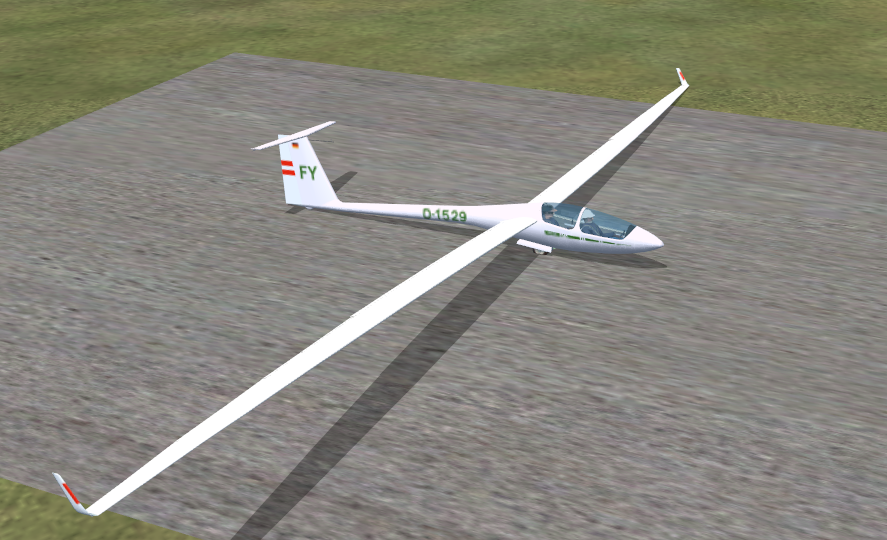


The wings! They sag! They bend! They flex!
OK, so this feature could be oversold, but the fact is Wolfgang and I spent countless hours working on the wings.
The end result is
wings that behave reasonably sensibly in a variety of conditions. To me they're the most interesting on the ground and on the aerotow
ground-run which I admit is a niche interest.
Perhaps uniquely in FSX, the ASH25 is an aircraft with a huge wingspan where the wings bend down so far when the glider is
on the ground
(and given the single mainwheel) it is normal for a wing to actually touch the ground. Getting this to look right isn't a
problem large jet modellers have had to deal with.
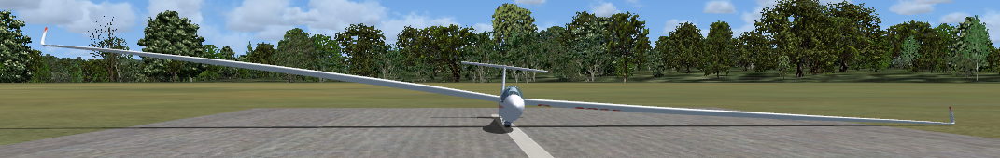
As the ground-run progresses, the wings steadily take the load and form the sweep you would expect in the air.
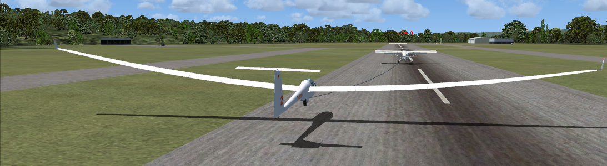
This picture below doesn't really show anything new but gives another angle. Perhaps here is a good place to mention that
the ASH25 actually has pleasant handling characteristics and the take-off and landing is fairly straightforward. The tricky
bit is the low-speed early part of the ground run, when the ailerons are ineffective but if you survive that bit the rest is
easy. If you're new to soaring you can make the takeoff more manageable by taking off into a mild headwind blowing
straight down the runway. A crosswind will be very difficult until you've got the hang of it.
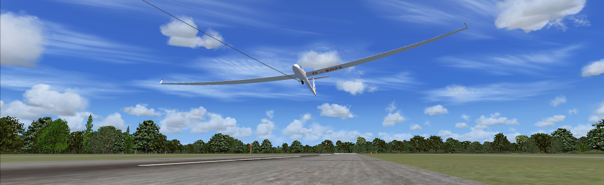
Panel Overview
|
The 'B21' panel
The 'B21' variant of the ASH25 has a competition-standard instrument set based around the Cambridge 302
Flight Computer. Variometer (compensated vertical climb) gauges show 'Total Energy', 'Netto' and 'Speed to Fly'
readings concurrently.
The '302' flight computer computes in real-time the optimal 'speed to fly' for the current conditions and
moves its main needle to show the pilot whether it would be appropriate to speed up or slow down. A decimal
display shows the expected arrival height at the current selected waypoint, particularly important on
'final glides' in such a high-performance glider.
Combined with the GPSNAV (left side of the panel) and GPSMAP (bottom of the panel), the glider gives
comprehensive information for the pilot to maximise cross-country performance. While previously seen in the
LS8-18, the GPSNAV and GPSMAP have been upgraded - the GPSNAV now allows the user to select any waypoint in the
flightplan and the GPSMAP can display the position of other aircraft.
The 'B21' instruments including the yawstring are all 'XML' instruments, avoiding the use of compiled 'dll'
programs, so the installation is complete after a simple drag-and-drop of the aircraft into the FSX folder.
|

|
|
The 'CAISET' panel
The download includes a second model of the ASH25 which incorporates the CAISET computer vario set familiar to
many sim pilots for the past decade.
The functions of these CAISET computer vario gauges is similar to the B21 instruments above. The GPSNAV (left
of panel, with the
left-right direction arrow) and slave vario's are simulations of the same instrument on the B21 panel. The main
difference is the implementation of the L-NAV on the CAISET panel versus the 'Cambridge 302' on the B21 panel.
Both the L-NAV and the 302 are designed to show you your predicted 'arrival height' at the next turnpoint,
average climb rates, and a speed-up/slow-down indication as an advanced 'variometer' reading.
The practical difference between the CAISET and B21 panels relates to their implementation in the simulator.
The B21 instruments are implemented in the FSX 'XML' scripting language with the FSX flightplan used to define the
soaring task. This means installation can be provided via a simple drag-and-drop of the files. The CAISET instruments use
the earlier 'DLL' format of programming and the installation is technically more complex.
Information for installing the CAISET panel is included in the package, and you can
also see those instructions on the CAISET install page
|

|
|
The view from the rear seat
The rear-seat position is available via the 'Views/Cockpit/Rear Seat' menu option.
As with the real ASH25, panel
space is at a premium (and gauges are expensive) so only a limited subset are provided to the the rear-seat pilot. In
particular the '302' or 'L-Nav' master gauge only appears on the front-seat panel, with the 'slave' vario repeated on the
rear-seat panel.
|

|
The B21 Panel Instruments - Detail
1. Winter Variometer displays Total Energy climb/sink rate
| 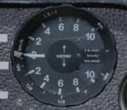 |
The Winter variometer main needle is displaying Total Energy compensated climb rate. This is
simply your actual climb rate (or rate of sink) with small adjustments to compensate for
changes in your airspeed which would otherwise affect the reading.
|
When the pilot chooses to pull up to enter a thermal or to dive to exit a sink
area, an uncompensated variometer would include the change in altitude due to the
change in velocity in its read-out, thus obscuring the climb or sink rate due to the rising air.
Therefore an uncompensated variometer can only accurately indicate the vertical
speed of the glider when flying at constant speed. The effect of total energy compensation
can easily be seen if you pull up into a climb in still air: an uncompensated vario will show a rapid
climb rate, while the TE vario will correctly show you continuing to lose energy.
The indicated climb on an uncompensated vario is particuarly misleading as you pull up
into a thermal - at this point the uncompensated vario will indicate a climb whether you're
in a thermal or not so it is possible for inexperienced pilots to be turning and cimbing into
a thermal that is not actually there. These have been called stick thermals as they are
created by the action of the pilot pulling back on the 'stick'.
The action of diving or pulling up affects the speed of the sailplane. A sailplane
can exchange height for speed or speed for height, i.e. potential energy for kinetic
energy or kinetic energy for potential energy. In fact, in still air, the sum of
potential energy and kinetic energy, i.e., the Total Energy, remains constant
(neglecting energy loss due to drag), hence the name Total Energy compensation.
Most modern sailplanes are equipped with Total Energy compensated variometers.
The instrument automatically switches between m/s or Knots display depending on
your FSX settings.
2. Netto Vario (slaving from the 302 LCD vario)
| 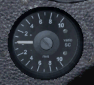 |
The needle displays NETTO climb rate (i.e. the vertical movement of the air outside
the glider), by subtracting the normal aircraft sink rate from the
total energy reading shown on the Winter vario.
|
The Netto reading is a further refinement upon the Total Energy reading delivered
by the Winter variometer. The Netto vario uses the glider airspeed to derive the sink rate
the glider should be sinking at in still air at the current airspeed, and subtracts that
from the 'total energy' reading. So the reading you're left with should be the net vertical movement
of the air outside the glider.
Note that this FSX gauge is performing the same calculation that would be performed in
a real glider gauge, using the input pressure sources (i.e. is it not 'cheating' by just reading
some FSX vertical air movement variable). This means the gauge performs in the same way as
a real gauge, e.g. if you open the airbrakes the gauge will interpret that correctly as
unexpected sink. If you leave the wheel down, the netto vario will display sink even in still
air, as it can tell the glider isn't flying at it's calibrated sink rate.
If you turn CumulusX off, and select 'clear weather', you'll find the Netto vario reads
pretty close to zero throughout the range of normal flying. You'll see momentary dips into
apparent sink as you manoever the glider (e.g. a pull-up) as it loses energy during that
process. If you do a 'push-over' (i.e. fly as if going over a hump-backed bridge) the netto
reading will correctly briefly go positive as the reduced loading on the wings results in
temporarily improved efficiency at low speed.
The instrument automatically switches between m/s or Knots display depending on
your FSX settings.
3. '302' LCD Variometer / Flight Computer
| 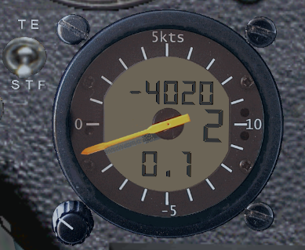 |
The main needle displays a Speed-to-fly indication (i.e. the needle moves down, as if indicating
sink, to tell you to speed up and vice versa). The top numeric display is the expected
arrival height AGL at the next
waypoint in the flightplan. The middle numeric display (at 3-o-clock on the instrument)
is the Macready setting. The bottom numeric display is the climb average.
Heights are in
feet, climb rates in knots, or meters and meters-per-second depending on your FSX units
settings.
The four readings (STF, arrival height, maccready, climb average) are explained in more detail
below.
|
302 Needle: Speed-to-fly
This tutorial on speed-to-fly is taken from the LS8-18 information which remains equally valid
in the ASH25.
 |
Speed-to-fly is yet another derived improvement in variometer compensation...
In this image, the stf needle is indicating lift (as if +3 knots) meaning
"you're in lift, slow down". You can see the Netto vario confirms this. At this point it would
be reasonable to question the difference between a Netto and a Speed-to-Fly variometer, as they
both appear to behave in a similar way (generally, needle up in lift, down in sink). But the difference
is probably more marked than the difference between the Netto vario and the Total Energy vario (with a
bit of luck you understand that difference). If you think of the Speed-to-Fly instrument as a
variometer then the reading starts making sense in that it is taking some of the thinking workload
off the pilot by indicating lift only when the you should actually slow down. i.e. pull up i.e. the
lift has to be strong enough to exceed the MacCready setting and you have to be flying fast enough that slowing
up is sensible. Counter-intuitively, you can fly through a little bit of lift and if you have a higher MacCready
setting, and you're not flying fast enough, the STF needle will still indicate sink, i.e. speed up.
Explaining this on paper is a poor substitute for flying with the instrument and getting used to its
behaviour. At first you can just blindly follow its instruction, speeding up or slowing down depending on whether the
needle is going down or up. But after a short while you get used to thinking of the instrument just as a particularly
intelligent variometer, than doesn't bother you with lift if you're already slow enough.
|
Given that the variometer is computing the 'Netto' movement of the airmass outside the
glider, the vario can compute the optimal speed to be flying through this air. I.e. if you
are flying through sink you should fly faster to spend less time in that sinking air,
and vice versa for rising air. The faster the air is sinking, the more you should speed up.
The speed-to-fly reading is the delta between the computed optimal speed
and the speed you are currently flying, displayed on the normal vario needle. If you are
flying at the optimal speed then the needle will show zero. If the needle goes down as
if indicating sink, then you should speed up.
A fully ballasted glider should normally be flown fairly fast (e.g. 90 knots) to benefit
from all that ballast on board.
If you're flying too slowly (common for inexperienced pilots) then the STF indication
will indicate sink i.e. speed up. As you speed up, the needle will return to zero as you
reach the 'optimal' speed.

These instruments on the panel have a unique learning aid in the use of the
Speed-to-fly indication: if you click the face of the ASI (i.e. airspeed)
gauge, the real-time computed speed-to-fly is indicated with a red 'bug' moving around
the rim of the ASI
gauge. In the image above, the 'stf bug' is drawn on the ASI at about 92 knots.
You will see the delta between this bug and the ASI needle is directly
translated to the Speed-to-fly needle on the 302 computer vario. Also you can immediately
see the effect other variables have upon the computed speed-to-fly, e.g. if you change the
MacCready setting the speed-to-fly will change, or if you dump ballast then the speed-to-fly
will gradually reduce as the ballast drains out.
Note the instrument has no knowledge of thermals ahead, and the reading does not take into
account your 'pucker-factor' based on proximity to the ground,
so if you're low and at risk of a landout you should not be charging around
at 90 knots regardless of what the STF instrument is telling you to do... in this situation you
should simply turn the MacCready down to zero.
302 Digital readout: Arrival Height
 |
The flight computer
will attempt to calculate your likely arrival height at the next waypoint.
The simulated reading in the 302 computer vario is unusually sophisticated
in that it gives you arrival height *AGL* (above ground, at the waypoint).
In this case, the flight computer is suggesting you will arrive at 440 feet above the
next waypoint.
|
The graphic below illustrates a pilot gliding towards a waypoint, with the 302 vario indicating an
arrival height of 440 feet (the real Cambridge 302 actually doesn't
display arrival height at all, just an altimeter reading)..
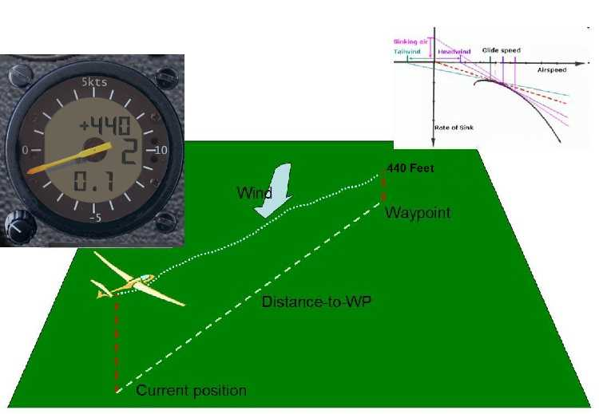
The flight computer uses the elevation given in the flightplan (or the next
point-of-interest in a mission) for the height of the next waypoint, and arrival
heights are displayed relative to this. If you pick an airport as a waypoint in the
flight planner then ground elevation is by default put into the flightplan. If you use
some other waypoint type in the flightplan (e.g. an Airway Intersection) then the
altitude of that waypoint will be embedded in the flightplan and the 'arrival height'
computed by the vario will be relative to that. So for normal cross-country soaring
purposes you should ensure the heights in the flightplan are ground elevations at
each waypoint (or Zero if you'd prefer the arrival height indication to be MSL).
As with the FSX GPS, this indication is meaningless unless you have a sensible flightplan loaded in FSX.
The flight computer has to take into account a variety of factors to come up with a reasonable prediction of your
arrival height, assuming a straight glide to the waypoint. These include:
- Current altitude - obviously how high you are now will directly affect how high you will be at the waypoint.
- Glider performance (also called the glider polar) - this gives the glide ratio at various speeds, i.e. the slope you
glide down in still air. Generally the faster you fly, the steeper you will come down. At 50 knots the ASH25
will have a glide ratio of 60:1, i.e. in still air after flying 60km the ASH25 will have descended 1km (1000m,
approx 3300 feet). 'Glide ratio' is also referred to as the 'L/D' ratio (i.e. the ratio of Lift/Drag) because the
physics means that these things are always equal, and 50 knots (no ballast) is the 'Max L/D speed' of the ASH25
(versus nearer 60 knots if ballasted). If you fly faster,
the glider will come down faster but it is important to know the aircraft is increasingly inefficient at higher
speeds, so if you double the speed you *more* than double the sink, i.e. the glide ratio is lower
at high speeds.

- Distance to go - the further away the waypoint is, the lower you are going to be when you get there.
- Speed you are going to be flying - the faster you fly, the steeper you come down. You tell the flight computer how
fast you will be flying via the MacCready Setting via the rotating knob (click the top or bottom of the
knob to increase/decrease, or use scroll wheel on mouse). With a MacCready setting of "0" you are telling the computer
you are expecting zero lift in the next thermal, i.e. the cruise speed you will be flying will be 'Max L/D' i.e. around
50 knots and simply stretching the flight as far as possible. A MacCready setting of 3 knots (i.e. you're telling the
flight computer the next thermal will be 3 knots) means you are expecting to cruise at 80-90 knots. Of course you don't
really *know* what the next thermal strength is, so the MacCready setting is based on your best judgement of conditions ahead.
- Wind - strength and bearing computed automatically by the flight computer, a headwind
will make you come down more steeply (reduce your arrival height), a tailwind will extend your glide (increase your arrival height).
You can view the same 'arrival height' reading either of two ways, which are actually equivalent:
- it is the predicted altitude AGL you will arrive at the waypoint
- it is your current height above the glideslope that would arrive at the destination at zero feet/meters.
You can use either of these definitions, whichever you're comfortable with.
As a reminder, the 302 flight computer vario is assuming zero overall lift/sink during this glide to the
waypoint, that the wind remains constant at its current value (a headwind shown here) and that the
pilot flies at a speed as appropriate to the MacCready setting.
- If the pilot flies through sink, the glider will sink below the computed glide path, and the
calculated arrival height will reduce.
- If the wind reduces with height (as it often does), then in this case the headwind will reduce
and the previously calculated arrival height (using the stronger higher headwind) will be pessimistic and
the pilot will see the arrival height improve as he proceeds towards the waypoint.
- If the MacCready setting is higher than zero, the pilot can increase the calculated arrival
height by reducing the MacCready setting.
More sophisticated flight computers, such as the SDI C4, can actually perform this calculation
around multiple waypoints to the final destination, which is fairly complex,
whereas the simulated Cambridge 302 shows arrival height at the next waypont only
302 Digital readout: MacCready Setting
|
The MacCready Setting is the value input by you, telling the vario the
expected thermal strengths.
In this case, you have told the flight computer to assume an expected thermal strength
of 2 knots.
Note that m/s will be used for this reading (in 0.5m/s increments) if metric settings
are chosen in FSX.
|
The value is adjusted using the knob at 8-o'clock on the LCD vario. Easiest
is to hover the mouse over the knob and rotate the mouse wheel. The vario displays the MacCready
setting in either m/s or Knots depending on your FSX settings.

In the image above, the pilot has set a conservative MacCready setting and is flying relatively
slowly between thermals and conserving height. This means she needs to climb less in thermals, i.e.
saves time in thermalling (but is possibly losing time in the cruise).

The pilot in this image has set a higher Macready setting, and is cruising faster
between thermals. This means he has to climb more than the pilot that was cruising more
slowly. Which pilot achieves the best cross-country speed depends on the strengths of the
thermals (i.e. which pilot has guessed correctly in the Macready setting). If the thermals
are weak, then the pilot that is cruising more slowly will achieve a higher overall speed because
they are spending less time climbing in the weak lift.

In this case, if we see the two flights superimposed, we see the more aggressive flying by the
faster pilot has actually paid off, i.e. the thermals are strong enough that his additional height loss
and need to climb is outweighed by the increased speed beween thermals.
Essentially the MacCready Setting is the value you use to tell the computer how aggressively (i.e.
quickly)
you want to fly, and the computer will perform its computations based on this value. For a
fully-ballasted ASH25, a MacCready Setting of 3 knots (1.5m/s) will mean you should be
flying at about 90 knots between thermals. The idea is simply the stronger the thermal you
expect, the faster you should fly to get there. This is well explained in the
"Art of Flying" last video in the sequence on this page.
302 Digital readout: Average Climb Rate
|
This shows a moving average of total energy climb/sink in either Knots or m/s depending on
FSX units settings.
In this case the computer vario is recording an average climb rate of 0.1 knots.
|
When you are thermalling, this displayed value can guide your judgement on what to set for the
Macready setting. Also, if you are thermalling, if this average is below the readings you
have typically seen in other thermals on the same flight, then perhaps you should leave the
current thermal and find another.
This average will also give you a clue that the thermal strength is weakening near the top of
a climb, and you should leave the current thermal rather than milk it to the top.
302 STF/TE Switch
The switch can be seen in the top-left corner of the image above.
This switch changes the main needle indication on the 302 Cambridge vario from 'speed-to-fly' to a
'total energy' reading, the same as that on the Winter vario. This makes sense before you've
crossed the start line on a cross-country task, where maximising cross-country speed is irrelevant
and you're more concerned about climbing in the area of the start airfield to get well placed
for a good start.
In TE mode, the needle shows total-energy climb rate as described above, but the 302 will also show
speed-to-fly push-pull arrows at 12-o'clock or 6-o'clock to tell you to slow down or speed up respectively.
4. Air Speed Indicator
| 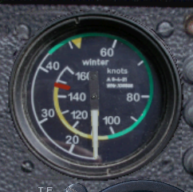
|
As seen on all aircraft, the ASI displays airspeed in either Knots or km/h depending
on FSX settings.
|
This instrument in the ASH25 includes a speed-to-fly training aid made visible by clicking
on the face of the dial. See information above under 'speed-to-fly'.
5. GPS-NAV GPS

|
The GPSNAV shows the direction and distance to the next waypoint in the flightplan.
For the GPSNAV to display something sensible,
you must have an FSX flightplan loaded. The moving map will display the flightplan.
|
The GPSNAV is similar to the stock FSX DG808S gpsnav with various
improvements made to improve readability. More significantly, the internal 'GPS' engine has been re-written to
replace the original programming, so the pilot can step forwards and backwards through ALL the turnpoints in the
task by using the 'up' and 'down' buttons.
Details on the home page are as follows:
- To: this is the identifier of the next waypoint (assuming a flightplan is loaded)
- Direction indication points to the next waypoint.
- Brg: Bearing to next waypoint.
- Trk: You current track (i.e. direction) over the ground.
- Dist: Distance to next waypoint.
The distance-to-go units (miles, km) depends on your
FSX setting. You can click the 'left' and 'right' buttons on the GPSNAV to see another couple of pages of information
(waypoint info) but these are less useful than in the real GPSNAV to make sure you've loaded the right flightplan,
because in FSX you can just look at the moving map or use the FSX menu.
The GPSNAV 'page' you see displayed above is the 'Home' page of the GPSNAV, and it the one used for normal
flight around a task. Any waypoint of the task can be chosen to be the current 'active' one by using the 'up' and
'down' cursor buttons while on this home screen. To gain familiarity with the instrument, try these buttons while you're
still on the ground.
The GPSNAV will automatically select the next waypoint in the current flightplan to be 'active' when you
are within 500 meters of the current waypoint. However there is nothing to stop you overriding this behaviour at any
time simply by using the 'up' button to move on to the next waypoint. An example of where this might be useful would be
in a start of a task, where you know the start line allows you to be a lot further than 500 meters from the start point,
but you still want to have the GPSNAV move on to the first TP even though you haven't passed 'through' the start point.
Also, many FSX soaring flightplans have the home takeoff airfield as the first waypoint in the flightplan even
though it isn't actually the start point of the task, and one click of the 'up' button will put things straight ready for
your record-breaking competition flight.
In some circumstances, you may wish to keep the GPSNAV pointing at a waypoint even though you have moved
within 500 meters of it and the gauge has clicked over to the next,
e.g. you've done a poor start and want to start again. In this case you can simply re-select the start waypoint by using the
'down' arrow. The usage is intuitive and obvious if you just try the 'up' and 'down' buttons.
If you use the 'left' and 'right' arrow buttons, the GPSNAV will cycle through a couple of other 'pages' of information
about the current active waypoint. This is only marginally useful in the air, although one page contains the
elevation of the active waypoint (labelled 'EL:') and this is useful to check the 'arrival height' being
presented by the 302 LCD computer as this arrival height value is above this elevation given for the
waypoint. Normally the elevation for the waypoint will be the ground elevation, so the 302 arrival height
reading will be what is commonly referred to as 'AGL' (above ground level).
6. Moving Map GPS
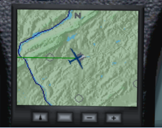
The 'Moving Map' GPS is fairly intuitive with limited user options.
You can zoom in/out using the +/- buttons.
The 'up arrow' button (left) toggles the map between 'north up' (as seen in the image above),
and 'track up' as in the image below.
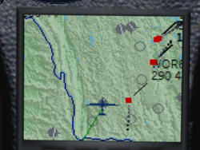
The unlabelled button to the right of the 'up' button actually toggles the visibility of
other aircraft in the map view (as you can see in the image above), useful if you are flying on multi-player and want to keep
track of your flying friends.
The current leg on the flightplan is shown with a green line, the others will be red.
7. Altimeter
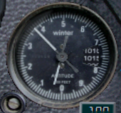
This is a standard static-pressure-driven altimeter, that switches units from
feet to meters in FSX depending on your FSX units settings.
8. Water Ballast percent full indication

The small LCD display on the panel displays percentage of water ballast carried.
Broadly, full water ballast increases the weight of the empty glider by 50%.
Modern competition gliders carry jettisonable water ballast (in the wings and
sometimes in the vertical stabilizer). The extra weight provided by the water
ballast is advantageous if the lift is likely to be strong, and may also be
used to adjust the glider's center of mass.
Click the top or bottom of the blue-knob gauge to open/close the ballast
valves.
The LCD ballast indicator has a configuration aid for FSX to help in
transplanting the gauge into another glider. If you click the face of the
ballast indicator gauge it will display the current all-up weight of the
glider in Kilograms. As you dump ballast you'll see this figure reduce.
Although heavier gliders have a slight disadvantage when climbing in rising air,
they achieve a higher speed at any given glide angle. This is an advantage in strong
conditions when the gliders spend only little time climbing in thermals. The pilot
can jettison the water ballast before it becomes a disadvantage in weaker thermal
conditions. Another use of water ballast is to dampen air turbulence such as might
be encountered during ridge soaring. To avoid undue stress on the airframe, gliders
must jettison any water ballast before landing. (ref wikipedia)

9. Flaps indicator
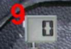
This gauge tells you your current flap setting. By default, the F6 key will move
the flap lever forward (for higher speeds) and the F7 key will move the flap
lever backwards (to extend flaps for slower speeds). The six available settings for the
flaps in the ASH25 are (from 'slow' to 'fast' flight):
- L is 'Landing flap', an extreme positive flap position
which very much increases drag and lowers the stall
speed for a safe and controlled landing. This setting is typically chosen on the
final approach as the runway stretches ahead of you. If it looks like you're going to
land short, it is not unusual to 'put the landing flaps away' (i.e. select '+1' or '0')
to stretch the glide a bit. That would indicate poor judgement on the approach though,
more likely in a strong headwind.
- T is 'Thermalling flap', again a highly positive flap setting so the stall speed
is lower than in normal flight and slow tight turns are easily controlled. I.e. what you need
for thermalling. With full ballast, thermalling speeds will not necessarily be the minimum, so
the 'T' or '+1' settings might be used while thermalling. With no ballast then 'T' is
definitely the preferred setting for thermalling.
- +1 is a moderate amount of positive flap, suitable for use in 'dolphin' flying
as the speed goes below 50 knots (~85kph). I.e. you are flying through lift, want to slow down
and absorb the energy for a while, but don't want to stop and circle. Note that positive flap
settings become increasingly inefficient at higher speeds where the high-lift profile
generates increasing amounts of drag.
- 0 is the flap setting where the flaps are perfectly fitted to the natural contour
of the aerofoil and gives the absolute maximum glide ratio possible, at about 50 knots (85 kph). A
non-flapped glider (like the LS8-18) could be considered similar
to a flapped glider stuck in '0' flap.
- -1 tilts the flaps slightly upwards (by 4 degrees, so we're only talking about
small deflections on such a high-performance glider) to 'spill' some of the lift at high
speeds. This reduces the 'induced drag' that comes with the lift for an overall glide-ratio
benefit. The '-1' setting might be considered suitable for 60-80 knots (i.e. up to 130 kph), after
which more negative flap can be dialled in with the '-2' setting.
- -2 is the maximum amount of 'negative' flap, actually a flap deflection of -8 degrees,
suitable for speeds greater that 80 knots, 130 kph for the same reasons given above.
10. Trim indicator
The GREEN knob on the far right side of the panel is TRIM, i.e. the 'neutral'
setting of the elevator. 'Trim forward' will bias the glider into more of a
nose-down attitude and at a neutral stick position the glider will fly faster,
and the reverse for 'trim back'. You adjust trim using the default keys in FSX,
worth assigning to buttons on your joystick. In general you 'trim forward' while
in cruise between thermals, and 'trim back' when you pull up and turn into a thermal.
The idea is simply to have the glider settle into the appropriate default speed for
the situation without you constantly pulling or pushing on the stick.
This ASH25 includes a TriggerTrim function (as a hidden gauge on the panel)
inspired by Peter Luerken's TrimWizard. When you press the trigger on the joystick (i.e.
activate the brakes) the trim will immediately move to the position of the stick. I.e.
to trim forward, push the stick forward and press the trigger, and you'll see the
green indicator move up accordingly.
11. Becker AR4201 Airband Transceiver

This is an airband radio